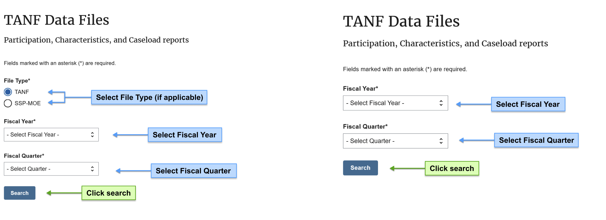
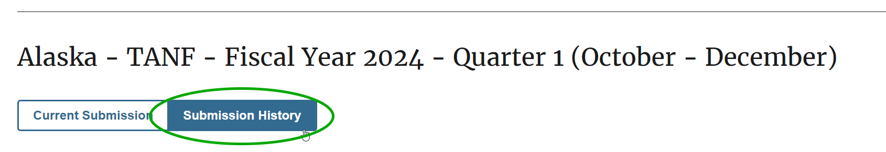
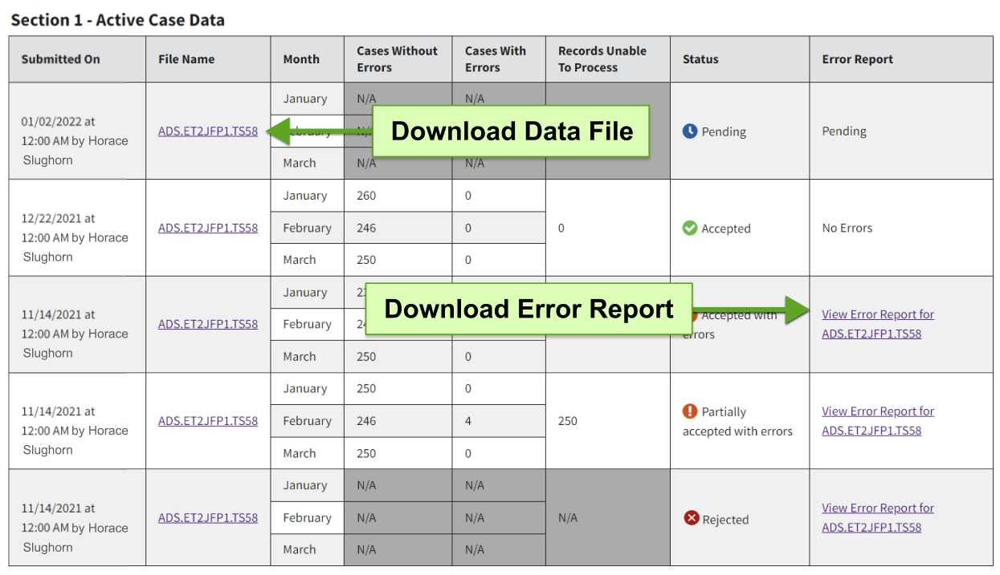

Viewing Submission History
Submission History allows you to access all versions of data files previously submitted for a given quarter via the TANF Data Portal (TDP).
How to View Submission History
-
Search for the reporting period to view
On the Data Files page, you can complete the search fields for ‘File Type’ (if your program submits both TANF & SSP data), ‘Fiscal Year’, and ‘Quarter’ to identify which data you’ll be viewing.
 -
Select the "Submission History" tab
After searching for the reporting period, a new button group labelled 'Current Submission' and 'Submission History’ will appear below the 'Search' button.
The button ‘Current Submission’ is default selected. Navigate to the ‘Submission History’ button to view the data files previously submitted through TDP.

Download Error Reports and Previously Submitted Data Files
To access error reports for each file you submit. Click on the link in the ‘Error Report’ column to view errors and data feedback associated with that version of the file. Depending on the completeness of your data and how soon you access the Submission History tab after submitting a file you may see other values in this column including "Pending" and "No Errors".
To access a file previously uploaded to TDP from 'Submission History', you can click the link in the ‘File Name’ column. Note: TDP will auto-rename files to specify the fiscal period and section (e.g. 2021.Q1.Active Case Data), so depending on your original file-naming conventions, the files you download may have a different name.
Understanding File Statuses and Aggregate Data
The Submission History table includes a status which communicates the level of completeness of each file and related aggregate data about its contents including counts of cases with and without errors, counts of records unable to process within a file, and (for section 3 and 4 data) a count of total errors in the file.
| Status | Description |
|---|---|
| Pending | Your file is being processed by TDP. |
| Accepted | Your file has been processed and contains no errors. |
| Accepted with errors | Your file was processed but some cases within your data contain errors. |
| Partially accepted with errors | Your file was unable to fully process. This means that some of the records in the file were not accepted, and some records were accepted but contain errors. |
| Rejected | Your file could not be processed and likely contains errors relating file structure/record layout. |
 Accepted
Accepted Accepted with errors
Accepted with errors{kind=link}
{kind=link}
{kind=link}
{kind=link}
| Column Name | Description |
|---|---|
| Cases Without Errors | The total number of unique Cases for a given reporting month in your file that do not have any errors associated with them. |
| Cases With Errors | The total number of unique Cases for a given reporting month in your file that have one or more error associated with them. This likely indicates problems with your data such as values outside those defined in the TANF/SSP Coding Instructions or Tribal TANF Coding Instructions. |
| Records Unable To Process | The total number of records within your file that the system was not able to "read" to check for errors. This likely indicates problems with the layout and coding of data within your file, e.g. A year value that's supposed to be formatted YYYY (ex. 2024) being entered as YY (ex. 24). |
| Total Errors | Since section 3 and 4 data contains aggregate values in one record rather than case data with many records, TDP can only provide a higher level error count. Errors here likely relate to values outside those defined in the TANF/SSP Coding Instructions or Tribal TANF Coding Instructions and/or inconsistencies in the values between related elements for a given reporting month. |